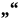
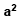
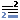

Folioangaben
Folionnummern werden mit <locus> gekennzeichnet:
f. <locus from=“14r“>14</locus>
Dabei ist die Angabe „recto“ zwar im Text oft implizit (wird also immer vorausgesetzt, wenn kein „v“ dabei steht), muss aber im Attribut ergänzt werden. 24 In der Angabe f. 81RV müssen laut Teuchos-Richtlinien „recto“ und „verso“ getrennt voneinander gekennzeichnet werden:
<locus from=“333r“>333<sup>R</sup></locus> <locus from=“333v“><sup>V</sup></locus>
Für die Auszeichnung von Folioangaben steht im Oxygen XML Author eine Aktion zur Verfügung, die die Angaben nach obigem Schema komplett automatisch auszeichnet. Einfach noch nicht ausgezeichnete Folioangabe markieren und Schaltfläche drücken – fertig.
Bei einer Stellenangaben aus einer anderen Handschrift muss die Folioangabe zusätzlich mit <ref type=“otherms“/> umgeben werden (siehe nächsten Abschnitt).
Handschriftensignatur
In der Beschreibung vorkommende Handschriftensignaturen werden mit <ref type=“otherms“ /> ausgezeichnet. Im Attribut @n muss zusätzlich die vollständige Signatur angegeben werden:
<ref type=“otherms“ n=“Mosq. 6“>Mosquenses 6</ref>
 Zitate
Zitate aus der Handschrift werden mit dem Element <q> gekennzeichnet. In Attribut @xml:lang muss die entsprechende Sprache als Sprachkürzel nach ISO 639 hinterlegt werden (d.h. „grc“ oder „lat“).
<q xml:lang=“grc“ type=“subscription“>κωνσταντῖνος ὁ λάσκαρις ἐκγπάψας ἐν μεδιολάνῳ ἐχπῆτο.</q>
Im Attribut type wird dabei der Zitattyp notiert. Nach Teuchos stehen folgende Werrte zur Auswahl:
| Bezeichnung | Wert im Attribut @type |
|---|---|
| Textbeginn | inc |
| Textbeginn, Anfang fehlt | inc-mut |
| Textende, auch bei der Angabe „der Text ist vorhanden bis ...“ | des |
| Textende, Schluss fehlt | des-mut |
| Fehlender Text | missing |
Die oben stehenden Attribute sind mit den nachfolgenden kombinierbar. Sie werden mittels „::“ verbunden.
| Bezeichnung | Wert im Attribut @type |
|---|---|
| Überschrift | rubric |
| Subskription | subscription |
| Schreibernotiz | note-scribal |
| Besitznotiz / ex libris | note-owner |
| annotation | Anmerkung / Kommentar |
| Dichtung | verse |
In Oxygen XML Author steht zum Auszeichnen von Zitaten eine Funktion bereit, die entsprechende Auswahllisten für die Attribute und ihre Werte bietet.
Im Author und auf der Website werden Zitate prinzipiell in einer anderen Schriftart (DejaVu Serif) dargestellt, damit griechische Zitate korrekt wiedergegeben werden.
Datumsangaben
Datumsangaben werden mit Hilfe von <date/> bzw. im Abschnitt <origin/> mit <origDate> ausgezeichnet. Wichtig ist, dass die Datumsangaben nochmals in einem bestimmten Format in den Attributen @when bzw. @notBefore-iso/@notAfter-iso notiert werden. Dadurch kannd der in der Datumsangabe enthaltene Wert später vom Computer für verschiedene Zwecke weiterbenutzt werden (z.B. Suche in bestimmten Zeiträumen). Es stehen zwei verschiedene Attribute zur Auswahl, die die unterschiedlich genauen Datumsangaben wiedergeben können:
1. Zeitspanne
<date when-iso=“1362“>1362</date>
2. Zeitraum
<date notBefore-iso=“1804-05-01“ notAfter=“1804-05-16“>Erste Hälfte Mai 1804</date>
Teuchos hat zur Notierung von Zeiträumen (z.B. „Anfang 14. Jahrhundert“) Richtlinien aufgestellt, wie diese maschinenlesbar in den Attributen notiert werden sollten. Die nachfolgende Tabelle gibt darüber Aufschluss:
| Datumsangabe im Text | Zu setzende Attributwerte |
|---|---|
| 14. Jh. | notbefore-iso=“1300“ notAfter-iso=“1399“ |
| 14. Jh. Anfang | notbefore-iso=“1300“ notAfter-iso=“1319“ |
| 14. Jh. Mitte | notbefore-iso=“1340“ notAfter-iso=“1359“ |
| 14. Jh. Ende | notbefore-iso=“1380“ notAfter-iso=“1399“ |
| 14. Jh. 1. Hälfte | notbefore-iso=“1300“ notAfter-iso=“1349“ |
| 14. Jh. 2. Hälfte | notbefore-iso=“1350“ notAfter-iso=“1399“ |
| 14. Jh. 1. Viertel | notbefore-iso=“1300“ notAfter-iso=“1324“ |
| 14. Jh. 2. Viertel | notbefore-iso=“1325“ notAfter-iso=“1349“ |
| 14. Jh. 3. Viertel | notbefore-iso=“1350“ notAfter-iso=“1374“ |
| 14. Jh. 4. Viertel | notbefore-iso=“1375“ notAfter-iso=“1399“ |
| 14. Jh. 1. Drittel | notbefore-iso=“1300“ notAfter-iso=“1333“ |
| 14. Jh. 2. Drittel | notbefore-iso=“1333“ notAfter-iso=“1366“ |
| 14. Jh. 3. Drittel | notbefore-iso=“1366“ notAfter-iso=“1399“ |
| um 1362 | notBefore-iso=“1357“ notAfter-iso=“1367“ |
| 1362 | when-iso=“1362“ |
| 5. Januar 1362 | when-iso=“1362-01-05“ |
Kombinierte Angaben ergeben die Summe der Zeiträume, z.B.:
| Datumsangabe im Text | Zu setzende Attributwerte |
|---|---|
| 13. Jh. E. / 14. Jh. 1. H. | notBefore-iso=“1280“ notAfter-iso=“1349“ |
| 1362/3 | notBefore-iso=“1362“ notAfter-iso=“1363“ |
In Oxygen XML Author steht zur Auszeichnung von Datumsangaben eine entsprechende Schaltfläche zur Verfügung, die die Optionen „Genaues Datum“ und „Ungefährer Zeitraum“ bietet, um alle Datumsangaben auszuzeichnen. Angaben zur Entstehungszeit der Handschriftenteile können mit den entsprechenden Pendants „Genaues Entstehungsdatum“ und „Ungefährer Entstehungszeitraum“ versehen werden.
Verweise
 Zeichen hochstellen
 Anmerkungen
Überstrich/Zahlenstrich einfügen
Apostroph einfügen
Multiplikationszeichen einfügen
In der Handschriftenbeschreibung können in jedem Teil Anmerkungen notiert werden. Dafür wird das Element<note/> direkt hinter die Bezugsstelle gesetzt:
Bosporo navigatione<note resp=”cagb”>... Anmerkung </note>
Im Attribut @resp wird (bei jeder neuen Anmerkung) notiert, ob die Anmerkung vom Bearbeiter der ursprünglichen Handschriftenbeschreibung stammt oder von einem/r Bearbeiter-/in des Vorhabens CAGB.
In Oxygen XML Author steht dafür eine entsprechende Schaltfläche zur Verfügung.
Griechisches Zahlenzeichen einfügen
Griechisches unteres Zahlenzeichen einfügen
Griechisches Ano Teila einfügen
Griechisches Koronis einfügen
 Anmerkung eines wissenschaftlichen Mitarbeiters einfügen (zur Veröffentlichung)
Anmerkung eines wissenschaftlichen Mitarbeiters einfügen (zur Veröffentlichung)
Text als erschlossen markieren